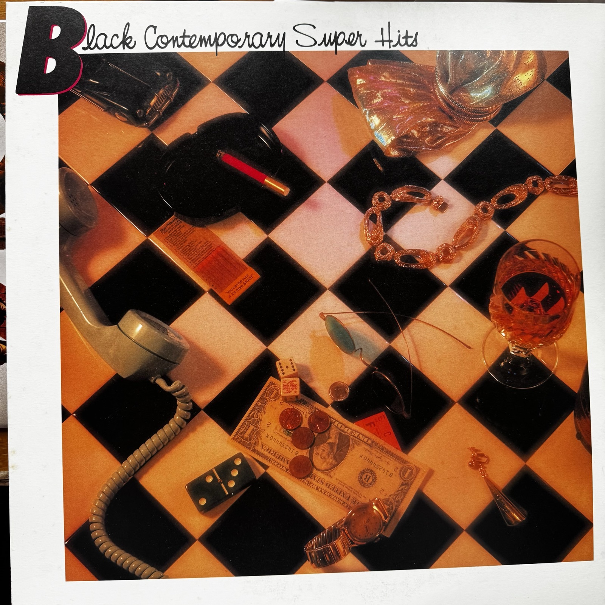

听节奏怎么分工
牙买加乐团 Third World 用雷鬼的反拍开场；Kool & the Gang 连续两首展示贝斯与合唱怎样带动舞池。翻到 B 面，Earth, Wind & Fire 又用电子低音和经过处理的人声带来另一种律动。
Various Artists · Japan, 1982
从 Third World 的雷鬼舞曲，到 Kool & the Gang 的派对合唱，再到 Manhattans 的深夜慢歌。这张日本合辑把十二首作品编成两面：每一面都可以从律动听到人声。
按唱片顺序开始听 ↓
牙买加乐团 Third World 用雷鬼的反拍开场；Kool & the Gang 连续两首展示贝斯与合唱怎样带动舞池。翻到 B 面，Earth, Wind & Fire 又用电子低音和经过处理的人声带来另一种律动。
Cheryl Lynn 在两面各有一首，可以对照她怎样在节拍上改换咬字。Deniece Williams 则以《It’s Gonna Take a Miracle》收住 A 面，从近距离的主歌逐步唱到轻盈的高音。
Bloodstone 用独白打开叙事，The O’Jays 用领唱与合声应答。The Reddings 翻唱 Otis Redding 的作品，Champaign 和 Manhattans 以两首慢歌收尾。留意每组歌手如何用其他声部接住主唱的句尾。
曲目与演唱者按封套及日文内页核对，部分曲目另附词曲作者。展开正在播放的一面，每首先读一行听点，再对照低音、节拍、领唱与合声。
表演：Third World · 词曲：Stevie Wonder、Melody A. McCully
听雷鬼的反拍怎么带进舞池
先跟住低音，再听落在拍子空隙里的和弦切分。Third World 把牙买加雷鬼的摆动接进更连续的舞曲律动里；副歌从个人的寻找扩大成集体呼唤，间奏则把焦点交给吉他。留意吉他独奏出来时，底下的律动并没有停。
表演：Kool & the Gang
听贝斯怎样回答人声
把副歌当成一句邀请：主唱和合声一问一答，下面的贝斯却有自己的节奏。第一次跟人声，第二次只跟低音，你会发现短句之间的空隙也在推动舞步。与下一首对听，这首的吸引力更集中在低音和切分。
表演：Kool & the Gang
听一句号召怎样变成合唱
认出开头的欢呼和反复出现的题名旋律，再留意个人领唱怎样把空间交给集体合声。它和上一首都是舞曲，但这里的副歌更像全场都能接上的一句话；熟悉的句子每回来一次，整首歌就像重新聚起一圈人。
表演：Bloodstone
听说话怎样转为歌唱
先听独白里叙述者转述母亲的劝慰，再听这层意思如何变成唱出来的副歌。口语的停顿与歌唱时被拉长的字形成反差。接在两首 Kool & the Gang 后，这一首把唱片的焦点从集体舞步转到一个人的声音。
表演：Cheryl Lynn
听主唱怎样在固定律动上变化
先抓住题名短句，再听 Cheryl Lynn 如何用咬字、拉长的尾音和即兴应答把它唱得不完全一样。鼓和贝斯提供稳定的参照，人声在上面时而紧贴节拍，时而把句尾延伸出去。可以和 B 面同一位歌手的《In the Night》连听。
表演：Deniece Williams · 词曲：Teddy Randazzo、Bobby Weinstein、Lou Stallman
听高音怎样从克制里长出来
这首歌最早由 The Royalettes 录唱；这里听的是 Deniece Williams 的版本。先听主歌如何把声音收近，再听副歌把字拉长、音域抬高。她的高音之所以显得轻盈，和前面留出的空间有关。等 A 面唱完再翻面，会听见与《Let’s Groove》鲜明的音色反差。
表演：Earth, Wind & Fire · 词曲：Maurice White、Wayne Vaughn
听电子人声与真人合声交接
开头经过电子处理的人声先给出音色标记，随后主唱和层叠的合声把旋律带出来。再跟一遍持续循环的合成低音，听不同声部怎样在同一个节奏框架上叠加。翻面后第一首就用电子音色重新点亮舞池。
表演：Cheryl Lynn
听同一句反复怎么越唱越活
先抓住副歌反复的短句，把它当成固定的节奏坐标。随后留意 Cheryl Lynn 在重复之间添入的尾音、应答和语气变化。与 A 面《Instant Love》相比，可以听同一把声音怎样借助反复，把注意力从歌词叙述转到发音本身。
表演：The O’Jays
听领唱和集体应答
题名句一开始就立住了全曲的中心。主歌用一连串较长的句子展开承诺，副歌又把它们收回一个短句。内页还标了齐唱段；听到那里可以留意领唱和合声的距离怎样缩短，一句私人告白如何变成可以一起唱的句子。
表演：The Reddings · 词曲：Otis Redding、Steve Cropper
听熟悉的旋律怎样被重新摆放
翻唱的是 Otis Redding 的歌，The Reddings 的成员包括他的两个儿子。先听每段怎样回到码头与潮水的画面，再把注意力放到旋律下面：如果熟悉 Otis 的版本，可以对比两个版本如何处理副歌的落拍、伴奏的密度和最后的淡出。
表演：Champaign · 词曲：Dana Walden
听陈述怎样变成一个问句
副歌先谈别人的爱情，再用题名把问题转向眼前两个人。听长句之后那几个短音节如何落下，以及伴奏在问句前后留下多少空间。放在 B 面后段，这首歌把前面的舞曲动能慢慢收进抒情的对话。
表演：Manhattans · 词曲：Leo Graham、Paul Richmond
听和声怎样托住独唱
这是 Manhattans 的慢歌，和 Earth, Wind & Fire 的同名歌是两首不同作品。先跟主唱的长句，再听背后人声如何托住句尾；尾段进入重复后，可以注意主唱如何在稳定的和声上改变语气。这张合辑就以这样的合唱余韵结束。
目录号 20AP 2435，属于 CBS/Sony 日本发行的「Black Contemporary 2000」系列，随附宣传页列出同系列 15 张唱片。背面的红、绿两栏分别对应 A、B 面；日文解说署名上柴とおる，落款 1982 年 10 月 5 日。背面 B3 漏印了题名中的「to」，此处采用内页的完整题名。